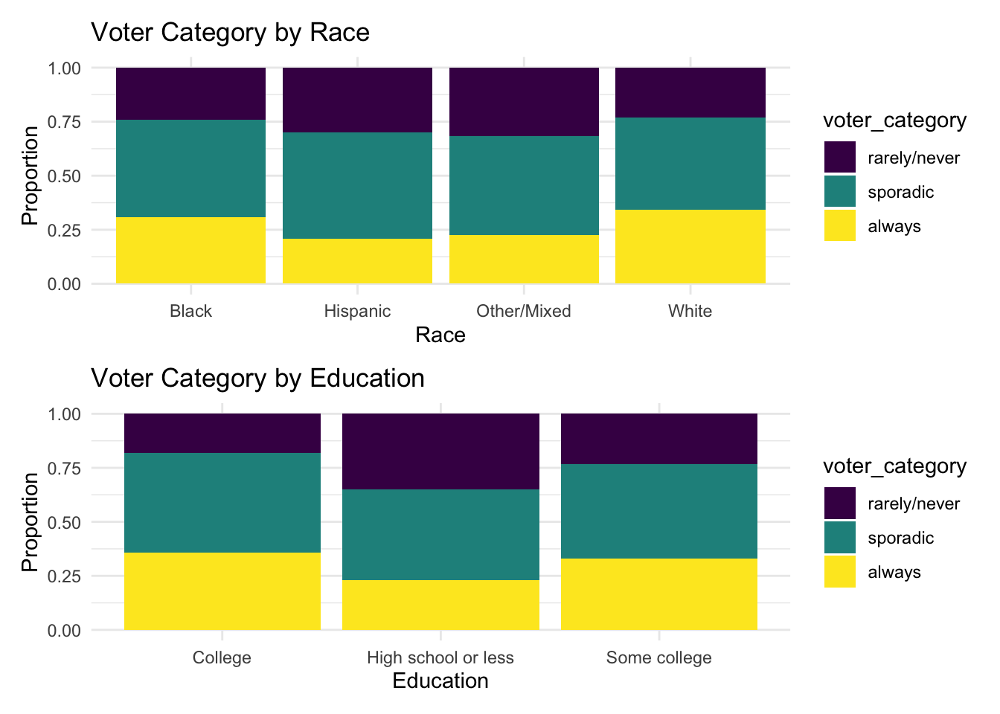
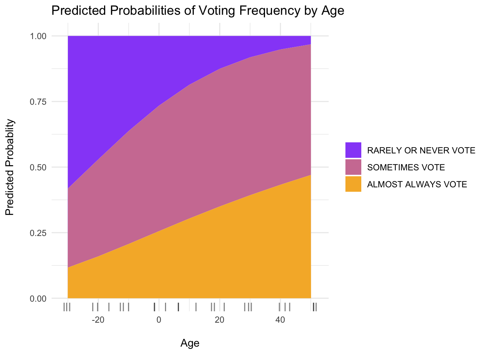
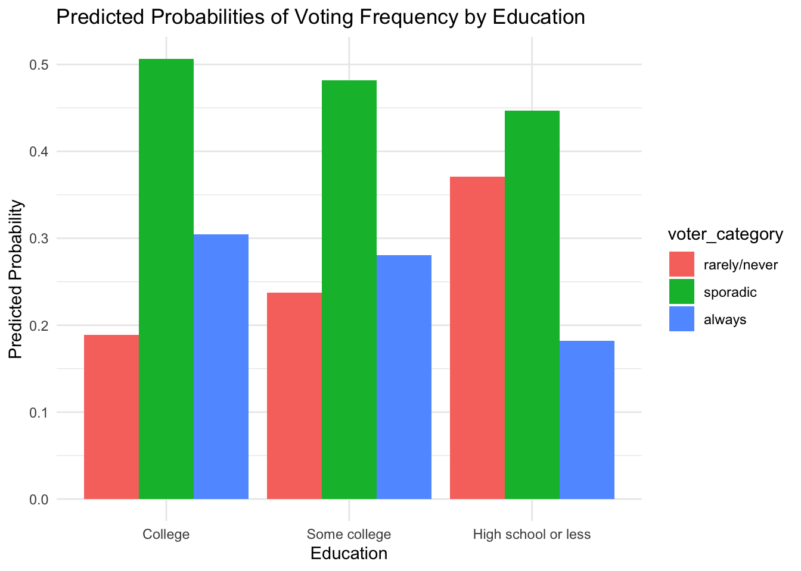

Code
library(nnet)
library(car)
library(tidyverse)
library(emmeans)
library(ggeffects)
library(knitr)
library(patchwork)
library(broom)
library(parameters)
library(easystats)Princeton University
Younes Strittmatter
Lab Goal: Predict voting frequency using demographic variables Data source: FiveThirtyEight “Why Many Americans Don’t Vote” survey Method: Multinomial logistic regression
The data for this assignment comes from an online Ipsos survey that was conducted for the FiveThirtyEight article “Why Many Americans Don’t Vote”. You can read more about the survey design and respondents in the README of the GitHub repo for the data.
Respondents were asked a variety of questions about their political beliefs, thoughts on multiple issues, and voting behavior. We will focus on using the demographic variables and someone’s party identification to understand whether a person is a probable voter.
The variables we’ll focus on were (definitions from the codebook in data set GitHub repo):
ppage: Age of respondent
educ: Highest educational attainment category.
race: Race of respondent, census categories. Note: all categories except Hispanic were non-Hispanic.
gender: Gender of respondent
income_cat: Household income category of respondent
Q30: Response to the question “Generally speaking, do you think of yourself as a…”
voter_category: past voting behavior:
You can read in the data directly from the GitHub repo:
Q30 contains the respondent’s political party identification. Make a new variable that simplifies Q30 into four categories: “Democrat”, “Republican”, “Independent”, “Other” (“Other” also includes respondents who did not answer the question).voter_category identifies the respondent’s past voter behavior. Relevel the variable to make rarely/never the baseline level, followed by sporadic, then always# library
library(ggplot2)
library(viridis)
library(cowplot)
# Plot for race
plot_race <- ggplot(voter_data, aes(x = race, fill = voter_category)) +
geom_bar(position = "fill") +
scale_fill_viridis_d() +
labs(title = "Voter Category by Race", x = "Race", y = "Proportion") +
theme_minimal()
# Plot for education
plot_educ <- ggplot(voter_data, aes(x = educ, fill = voter_category)) +
geom_bar(position = "fill") +
scale_fill_viridis_d() +
labs(title = "Voter Category by Education", x = "Education", y = "Proportion") +
theme_minimal()
# Combine plots
combined_plot <- plot_race + plot_educ + plot_layout(ncol = 1)
combined_plot
From the plot, Black and White vote more frequenctly then Hispanic and Other. Also the higher the education (college>highschool or less), the more freqeuent the voting.
# weights: 36 (22 variable)
initial value 6411.501317
iter 10 value 5869.948482
iter 20 value 5728.474131
final value 5693.312867
converged# weights: 36 (22 variable)
initial value 6411.501317
iter 10 value 5869.948482
iter 20 value 5728.474131
final value 5693.312867
converged# weights: 45 (28 variable)
initial value 6411.501317
iter 10 value 5818.012349
iter 20 value 5709.034111
iter 30 value 5621.228937
final value 5616.390878
converged Model Resid. df
1 ppage_centered + race + gender + income_cat + educ 11650
2 ppage_centered + race + gender + income_cat + educ + pol_ident_new 11644
Resid. Dev Test Df LR stat. Pr(Chi)
1 11386.63 NA NA NA
2 11232.78 1 vs 2 6 153.844 0> #Enter answer based on your code: since p < .005, yesUse the model you select for the remainder of the assignment.
# weights: 45 (28 variable)
initial value 6411.501317
iter 10 value 5818.012349
iter 20 value 5709.034111
iter 30 value 5621.228937
final value 5616.390878
convergedCall:
multinom(formula = voter_category ~ ppage_centered + race + gender +
income_cat + educ + pol_ident_new, data = voter_data)
Coefficients:
(Intercept) ppage_centered raceHispanic raceOther/Mixed raceWhite
sporadic 1.731560 0.04568619 0.04023859 -0.3324253 -0.07753808
always 1.490383 0.05820752 -0.34101920 -0.6004751 0.12720746
genderMale income_cat$40-75k income_cat$75-125k
sporadic -0.09005897 -0.0737542388 0.01249916
always -0.19218925 -0.0003681586 0.16519710
income_catLess than $40k educHigh school or less educSome college
sporadic -0.5878096 -0.8532927 -0.2928893
always -0.6640936 -1.2672114 -0.3303234
pol_ident_newIndep pol_ident_newOther pol_ident_newRep
sporadic -0.3924293 -0.940448 -0.08380513
always -0.5623037 -1.400990 -0.16176773
Std. Errors:
(Intercept) ppage_centered raceHispanic raceOther/Mixed raceWhite
sporadic 0.1360829 0.002324481 0.1280060 0.1590604 0.1078495
always 0.1468958 0.002565596 0.1497456 0.1853844 0.1187785
genderMale income_cat$40-75k income_cat$75-125k
sporadic 0.07217151 0.1113653 0.1066254
always 0.07966046 0.1211677 0.1142763
income_catLess than $40k educHigh school or less educSome college
sporadic 0.1137398 0.09739887 0.09520334
always 0.1270306 0.10882778 0.10240769
pol_ident_newIndep pol_ident_newOther pol_ident_newRep
sporadic 0.09769615 0.1062288 0.1027674
always 0.10692855 0.1312004 0.1101431
Residual Deviance: 11232.78
AIC: 11288.78 Analysis of Deviance Table (Type II tests)
Response: voter_category
LR Chisq Df Pr(>Chisq)
ppage_centered 638.30 2 < 2.2e-16 ***
race 52.65 6 1.379e-09 ***
gender 6.03 2 0.0491 *
income_cat 67.72 6 1.198e-12 ***
educ 154.14 4 < 2.2e-16 ***
pol_ident_new 153.84 6 < 2.2e-16 ***
---
Signif. codes: 0 '***' 0.001 '**' 0.01 '*' 0.05 '.' 0.1 ' ' 1Everything is significant
# Get estimated marginal means from the model
multinomial_analysis <- emmeans(model, ~ pol_ident_new | voter_category)
# Calculate contrasts
coefs <- contrast(regrid(multinomial_analysis, "log"), "trt.vs.ctrl1", by = "pol_ident_new")
# You can add a parameter to the above command, ref = newbaseline, if you want to change baseline
# Update and display the contrasts
update(coefs, by = "contrast") %>%
kable(format = "markdown", digits = 3)| contrast | pol_ident_new | estimate | SE | df | t.ratio | p.value |
|---|---|---|---|---|---|---|
| sporadic - (rarely/never) | Dem | 0.961 | 0.070 | 28 | 13.722 | 0.000 |
| always - (rarely/never) | Dem | 0.480 | 0.074 | 28 | 6.498 | 0.000 |
| sporadic - (rarely/never) | Indep | 0.591 | 0.077 | 28 | 7.643 | 0.000 |
| always - (rarely/never) | Indep | -0.049 | 0.084 | 28 | -0.590 | 0.900 |
| sporadic - (rarely/never) | Other | 0.078 | 0.087 | 28 | 0.902 | 0.747 |
| always - (rarely/never) | Other | -0.835 | 0.110 | 28 | -7.577 | 0.000 |
| sporadic - (rarely/never) | Rep | 0.883 | 0.084 | 28 | 10.469 | 0.000 |
| always - (rarely/never) | Rep | 0.327 | 0.089 | 28 | 3.672 | 0.004 |
# Get estimated marginal means from the model for education
multinomial_analysis_educ <- emmeans(model, ~ educ | voter_category)
# Calculate contrasts for education
coefs_educ <- contrast(regrid(multinomial_analysis_educ, "log"), "trt.vs.ctrl1", by = "educ")
# Update and display the contrasts for education
update(coefs_educ, by = "contrast") %>%
kable(format = "markdown", digits = 3)| contrast | educ | estimate | SE | df | t.ratio | p.value |
|---|---|---|---|---|---|---|
| sporadic - (rarely/never) | College | 0.986 | 0.076 | 28 | 12.904 | 0.000 |
| always - (rarely/never) | College | 0.477 | 0.080 | 28 | 5.960 | 0.000 |
| sporadic - (rarely/never) | High school or less | 0.187 | 0.069 | 28 | 2.705 | 0.031 |
| always - (rarely/never) | High school or less | -0.711 | 0.080 | 28 | -8.883 | 0.000 |
| sporadic - (rarely/never) | Some college | 0.707 | 0.074 | 28 | 9.512 | 0.000 |
| always - (rarely/never) | Some college | 0.167 | 0.079 | 28 | 2.114 | 0.112 |
ggemmeans(model, terms = c("ppage_centered")) %>%
ggplot(., aes(x = x, y = predicted, fill = response.level)) +
geom_area() +
geom_rug(sides = "b", position = "jitter", alpha = .5) +
labs(x = "\nAge", y = "Predicted Probablity\n", title = "Predicted Probabilities of Voting Frequency by Age") +
scale_fill_manual(
name = NULL,
values = c("always" = "#F6B533", "sporadic" = "#D07EA2", "rarely/never" = "#9854F7"),
labels = c("RARELY OR NEVER VOTE ", "SOMETIMES VOTE ", "ALMOST ALWAYS VOTE "),
breaks = c("rarely/never", "sporadic", "always")
) +
theme_minimal()
library(ggplot2)
library(dplyr)
# Convert ggemmeans output to a dataframe
pred_data <- ggemmeans(model, terms = "educ") %>% as.data.frame()
# Rename columns correctly
colnames(pred_data)[colnames(pred_data) == "x"] <- "educ" # Rename 'x' to 'educ'
colnames(pred_data)[colnames(pred_data) == "response.level"] <- "voter_category" # Rename 'response.level' to 'voter_category'
# Ensure factors are properly formatted
pred_data$educ <- factor(pred_data$educ, levels = unique(pred_data$educ))
pred_data$voter_category <- factor(pred_data$voter_category, levels = c("rarely/never", "sporadic", "always"))
# Plot the predicted probabilities
ggplot(pred_data, aes(x = educ, y = predicted, fill = voter_category)) +
geom_col(position = "dodge") +
labs(x = "Education", y = "Predicted Probability",
title = "Predicted Probabilities of Voting Frequency by Education") +
theme_minimal()
| contrast | pol_ident_new | estimate | SE | df | t.ratio | p.value |
|---|---|---|---|---|---|---|
| sporadic - (rarely/never) | Dem | 0.961 | 0.070 | 28 | 13.722 | 0.000 |
| always - (rarely/never) | Dem | 0.480 | 0.074 | 28 | 6.498 | 0.000 |
| sporadic - (rarely/never) | Indep | 0.591 | 0.077 | 28 | 7.643 | 0.000 |
| always - (rarely/never) | Indep | -0.049 | 0.084 | 28 | -0.590 | 0.900 |
| sporadic - (rarely/never) | Other | 0.078 | 0.087 | 28 | 0.902 | 0.747 |
| always - (rarely/never) | Other | -0.835 | 0.110 | 28 | -7.577 | 0.000 |
| sporadic - (rarely/never) | Rep | 0.883 | 0.084 | 28 | 10.469 | 0.000 |
| always - (rarely/never) | Rep | 0.327 | 0.089 | 28 | 3.672 | 0.004 |
| contrast1 | contrast | estimate | SE | df | t.ratio | p.value |
|---|---|---|---|---|---|---|
| Indep - Dem | sporadic - (rarely/never) | -0.370 | 0.094 | 28 | -3.933 | 0.003 |
| Other - Dem | sporadic - (rarely/never) | -0.883 | 0.103 | 28 | -8.578 | 0.000 |
| Other - Indep | sporadic - (rarely/never) | -0.513 | 0.107 | 28 | -4.807 | 0.000 |
| Rep - Dem | sporadic - (rarely/never) | -0.078 | 0.099 | 28 | -0.787 | 0.860 |
| Rep - Indep | sporadic - (rarely/never) | 0.292 | 0.099 | 28 | 2.965 | 0.029 |
| Rep - Other | sporadic - (rarely/never) | 0.805 | 0.109 | 28 | 7.404 | 0.000 |
| Indep - Dem | always - (rarely/never) | -0.529 | 0.101 | 28 | -5.255 | 0.000 |
| Other - Dem | always - (rarely/never) | -1.315 | 0.125 | 28 | -10.508 | 0.000 |
| Other - Indep | always - (rarely/never) | -0.786 | 0.129 | 28 | -6.072 | 0.000 |
| Rep - Dem | always - (rarely/never) | -0.153 | 0.104 | 28 | -1.470 | 0.468 |
| Rep - Indep | always - (rarely/never) | 0.376 | 0.104 | 28 | 3.605 | 0.006 |
| Rep - Other | always - (rarely/never) | 1.162 | 0.130 | 28 | 8.969 | 0.000 |
Last part of the assignment: Interpret the results from running the following code for your model
| contrast | educ | estimate | SE | df | t.ratio | p.value |
|---|---|---|---|---|---|---|
| sporadic - (rarely/never) | College | 0.986 | 0.076 | 28 | 12.904 | 0.000 |
| always - (rarely/never) | College | 0.477 | 0.080 | 28 | 5.960 | 0.000 |
| sporadic - (rarely/never) | High school or less | 0.187 | 0.069 | 28 | 2.705 | 0.031 |
| always - (rarely/never) | High school or less | -0.711 | 0.080 | 28 | -8.883 | 0.000 |
| sporadic - (rarely/never) | Some college | 0.707 | 0.074 | 28 | 9.512 | 0.000 |
| always - (rarely/never) | Some college | 0.167 | 0.079 | 28 | 2.114 | 0.112 |
| contrast1 | contrast | estimate | SE | df | t.ratio | p.value |
|---|---|---|---|---|---|---|
| High school or less - College | sporadic - (rarely/never) | -0.799 | 0.095 | 28 | -8.416 | 0.000 |
| Some college - College | sporadic - (rarely/never) | -0.278 | 0.092 | 28 | -3.030 | 0.014 |
| Some college - High school or less | sporadic - (rarely/never) | 0.520 | 0.088 | 28 | 5.920 | 0.000 |
| High school or less - College | always - (rarely/never) | -1.188 | 0.104 | 28 | -11.394 | 0.000 |
| Some college - College | always - (rarely/never) | -0.310 | 0.097 | 28 | -3.207 | 0.009 |
| Some college - High school or less | always - (rarely/never) | 0.878 | 0.098 | 28 | 8.995 | 0.000 |
The table presents pairwise comparisons of predicted probabilities for voter categories based on education levels. The contrasts indicate how education level affects the likelihood of being in different voter categories (sporadic or always voters) compared to rarely/never voters.